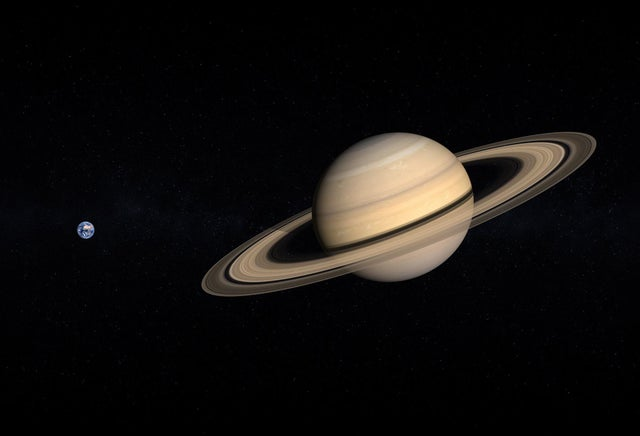
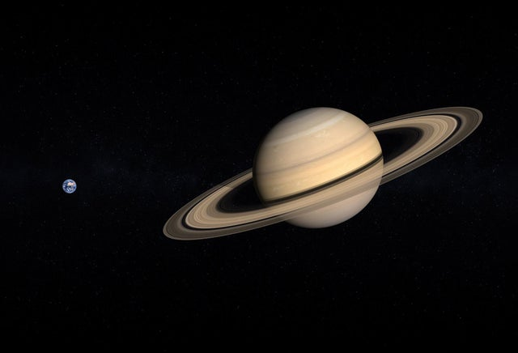

Saturnus är den sjätte planeten från solen och den näst största i solsystemet. Den är en gasjätte. Saturnus har 95 gånger så stor massa som jorden och har nio gånger så stor diameter. Om man skulle skära upp Saturnus skulle man se att de yttre molnlagren bara bildar ett tunt skal, inte mer än 400 km tjockt. Planetens inre är mycket lugnare än molnlagren. Det är ett stabilt roterande klot av väte som är uppdelat i flera åtskilda skal. Närmast ytan finns ett tunt lager av vätgas. Detta övergår gradvis i en djup ocean av flytande väte som också innehåller helium. I planetens mitt finns en kärna av fast sten, ungefär lika stor som jorden. Trycket på kärnan är mycket stort, mer än en miljon gånger jordatmosfärens tryck, och temperaturen i kärnan uppgår till ca 11 700 °C, d.v.s. betydligt varmare än på solens yta. Saturnus atmosfär består av väte, helium och även små mängder vatten, ammoniak och metan.
 

Även om Saturnus ringar ser solida ut från Jorden består de i verkligheten av oräkneliga partiklar av is och andra komet fragment. Partiklarnas storlek kan sträcka sig från ett sandkorns till flera meter och kanske upp till en kilometer. Ringarna är ytterst tunna – bara en kilometer – jämfört diametern som är 250 000 km. Trots det imponerande utseendet så är det relativt lite material i ringarna – pressade man ihop allt till en enda kropp skulle den bara mäta 100 km. Saturnus har 82 kända månar, varav 53 är namngivna. Det finns dessutom bevis för ytterligare hundratals småmånar med diameterna 40–500 meter vid Saturnus ringar, som inte ses som äkta satelliter. Titan, är den största månen. Den har 90 procent av satelliternas sammanräknade massa och då är även ringarnas massa inräknad. Saturnus näst största måne, Rhea kan ha ett eget ringsystem och en tunnare atmosfär. Många av de övriga månarna är väldigt små: 34 stycken är mindre än 10 kilometer i diameter och ytterligare 14 stycken är mindre än 50 kilometer. Traditionellt har Saturnus månar namngivits efter titaner i den grekiska mytologin.